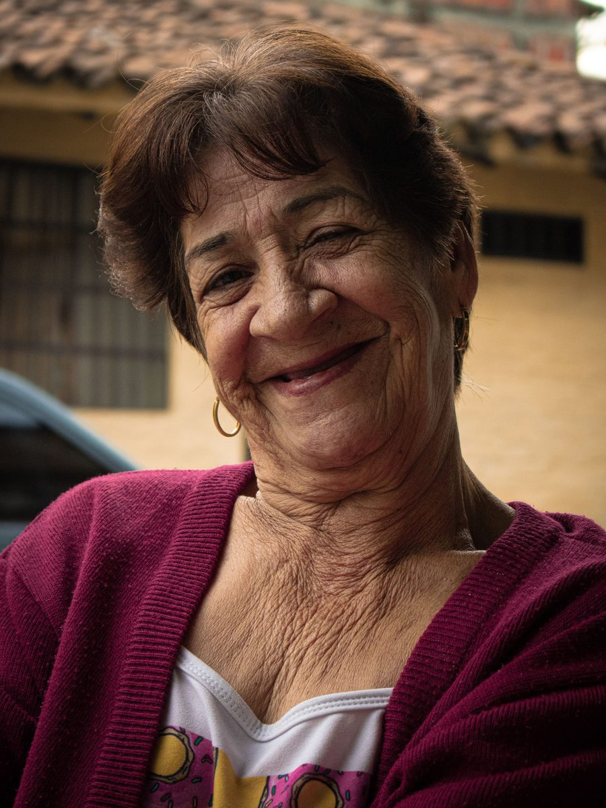
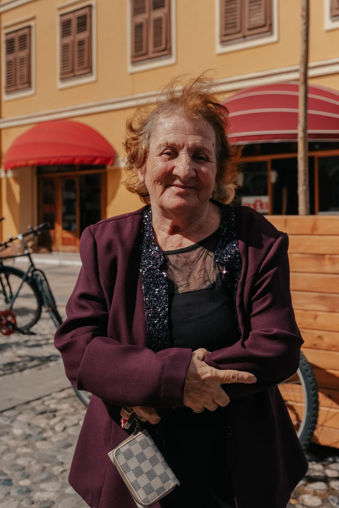

NUESTROS SERVICIOS
Un servicio, muchas formas de ayudar.
Elija la sección que le interese, o recorra la página para ver todo lo que ofrecemos.
Personas mayores
Compañía y apoyo para seguir haciendo su vida.

Ya no conduce, o simplemente prefiere no ir solo. Le acompañamos con respeto y calma, a su ritmo, en sus gestiones y salidas diarias.
Le recogemos en su domicilio y le acompañamos allí donde necesite ir: al médico, a la farmacia, al banco, a la compra, a visitar a la familia o incluso a misa. No se trata solo de llevarle, nos quedamos con usted durante toda la actividad.
- Puerta a puerta — recogida y regreso a casa
- Compañía dentro — consulta, tienda, iglesia o evento
- Siempre la misma persona — una cara conocida, no un desconocido distinto cada vez
- A su ritmo — sin prisas
Consultas médicas
Que nunca vaya solo a una cita médica.
Recogida en casa, acompañamiento dentro de la consulta y regreso seguro. Le avisamos por WhatsApp en cada etapa para que usted, esté donde esté, esté tranquilo.
- Antes — recogida puntual en el domicilio
- Durante — esperamos con él o ella en la sala, ayudamos a entender indicaciones si hace falta
- Después — regreso a casa y aviso por WhatsApp a la familia
Ideal para especialistas, análisis, revisiones, fisioterapia, oncología o diálisis: cualquier cita donde la espera se hace larga y la compañía importa.
Alta hospitalaria
La vuelta a casa, acompañada.
Tras una hospitalización o cirugía, recogemos a su familiar en el hospital y le acompañamos hasta que esté instalado y seguro en casa.
- Recogida en el hospital — a la hora que indique el alta médica
- Trayecto tranquilo — sin prisas, con atención a su estado
- Ayuda al llegar a casa — acomodarse, recoger recetas de camino si es necesario
- Aviso a la familia — por WhatsApp en cuanto esté en casa
Nota: nuestro vehículo no está adaptado para sillas de ruedas; atendemos altas donde la persona puede caminar con apoyo.
Compras y gestiones
La compra semanal, sin cargar usted solo.
Le acompañamos al supermercado, a la farmacia, al banco o a cualquier gestión administrativa, ayudando a llevar las bolsas y a resolver trámites con calma.
- Supermercado y mercado — le acompañamos dentro, cargamos las bolsas
- Banco y administración — gestiones que a veces cuestan hacer solo
- Farmacia — recogida de recetas y medicación
- Vuelta a casa — con todo colocado
Movilidad temporal reducida
Mientras se recupera, no tiene que ir solo.
Tras una cirugía, una caída o una convalecencia, ofrecemos el mismo acompañamiento cercano y fiable para quienes caminan con apoyo.
Pensado para personas que caminan con bastón, andador o con ayuda de otra persona, pero que no necesitan silla de ruedas. Le acompañamos a revisiones, rehabilitación o gestiones mientras recupera su movilidad habitual.
Importante: nuestro vehículo no está adaptado para sillas de ruedas. Si su familiar las necesita, contáctenos y le orientamos hacia un servicio adaptado.
Larga distancia
Madrid, Barcelona, o donde le necesiten.
Viajes de larga distancia con el mismo acompañamiento cercano: para ver a un especialista, visitar a la familia, o cualquier ocasión que merezca la pena el viaje.
- Ida y vuelta el mismo día — para citas puntuales
- Con pernocta — si el viaje lo requiere
- Paradas cómodas — a su ritmo, no al nuestro
- Un solo interlocutor — antes, durante y después del viaje
Consulte tarifas para Madrid, Barcelona u otros destinos de la Comunidad Valenciana por WhatsApp.
Hijos e hijas ocupados
Vamos nosotros en su lugar.
Si vive fuera de Valencia, o simplemente no puede ausentarse del trabajo cada vez que su familiar tiene una cita, vamos nosotros en su lugar. Le mantenemos informado por WhatsApp en cada etapa, para que esté tranquilo esté donde esté.
Eventos y visitas familiares
Compañía para lo que merece la pena compartir.

Le acompañamos a celebraciones, reuniones familiares, misa y actos religiosos, o cualquier ocasión que merezca la pena compartir en buena compañía. Esperamos con usted durante el evento y le devolvemos a casa cuando usted lo indique.
Paseos y vida social
A veces lo que hace falta es compañía.
A veces lo que hace falta no es una gestión, sino compañía: un paseo por el paseo marítimo, una visita a un amigo, o simplemente salir de casa un rato con alguien de confianza al lado.
Comunidad Valenciana
Más allá de la ciudad de Valencia.
Además de Valencia capital, cubrimos trayectos de media distancia por toda la Comunidad Valenciana.